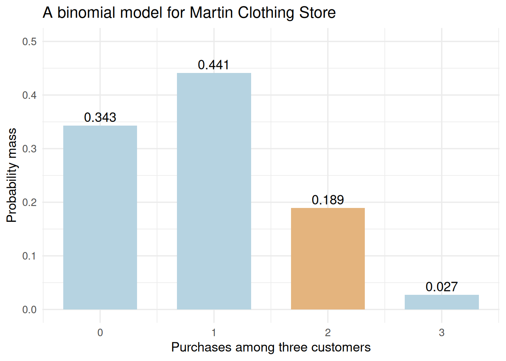
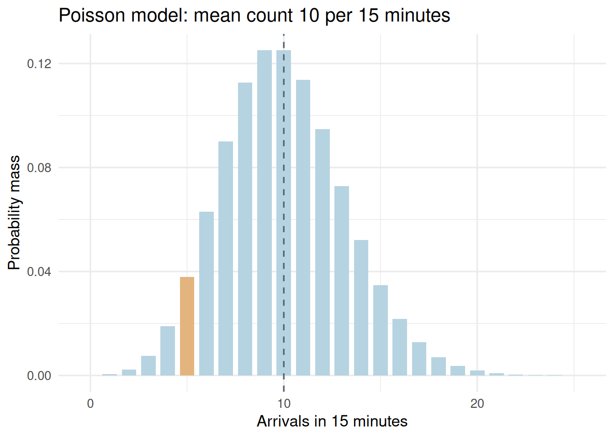

# library(): loads a package so its functions can be used in this session.
# theme_set(): sets the default theme for subsequent ggplot charts in this R session.
# theme_minimal(): uses a minimal chart style; base_size controls the base text size in points.
# Load display tools and choose a common chart theme; calculations use base R distributions.
# No observation file is imported: the following examples use stated textbook model parameters.
library(ggplot2)
library(knitr)
theme_set(theme_minimal(base_size = 13))Module 3: Binomial and Poisson Models
Lesson 4 | Select a count model and calculate the right event
What we will learn
A named probability distribution connects a set of assumptions to a probability mass function. We use a binomial model for successes in a fixed number of trials and a Poisson model for occurrences within a fixed exposure interval.
By the end, you should be able to justify the model, translate a verbal event into an inequality, calculate its probability in R, and interpret simulation as a model illustration.
Reading: main textbook, §5.5, printed pp.242–249 (Martin Clothing Store, p.244), and §5.6, pp.252–255 (arrivals example, p.253). The hypergeometric distribution in §5.7 is a later extension for sampling without replacement; do not assume a binomial model automatically applies there.
Business case: Martin Clothing Store purchases
At Martin Clothing Store, the book asks about the next three customers. The stated probability that a customer purchases is 0.30. Assume that probability is the same for each customer and that the three purchase decisions are independent. What is the probability that exactly two customers purchase? Each trial concerns one customer; the random variable counts purchases among the three customers.
في متجر Martin Clothing Store، يتناول سؤال الكتاب الزبائن الثلاثة القادمين. احتمال أن يشتري الزبون هو 0.30 وفق المعطيات. نفترض ثبات هذا الاحتمال لكل زبون واستقلال قرارات الشراء الثلاثة. ما احتمال أن يشتري زبونان بالضبط؟ تتعلق كل محاولة بزبون واحد، ويعدّ المتغير العشوائي المشترين بين الزبائن الثلاثة.
Check the binomial assumptions
Let \(X\) count purchases. A binomial model requires:
- A fixed number of trials, \(n=3\).
- Two outcomes on each trial: purchase or no purchase.
- The same success probability on every trial, \(p=0.30\).
- Independent trial outcomes.
“Success” is a mathematical label for the outcome being counted. It need not mean a desirable outcome in other applications. A shopping group making a joint purchase decision, or a promotion that changes during observation, could violate these assumptions.
We write \(X\sim\operatorname{Binomial}(n,p)\), with
\[P(X=x)=\binom{n}{x}p^x(1-p)^{n-x},\qquad x=0,1,\ldots,n.\]
Exactly two purchases can occur in three arrangements: purchase–purchase–no purchase, purchase–no purchase–purchase, or no purchase–purchase–purchase. Each arrangement has probability \(0.3^2(0.7)\), so the total is \(3(0.3^2)(0.7)=0.189\).
# data.frame(): builds a table whose named columns have compatible lengths.
# kable(): formats a data frame or matrix as a readable report table; digits sets displayed precision.
# stopifnot(): stops execution if any supplied condition is FALSE; successful checks produce no output.
# abs(): returns absolute values; a small tolerance in an equality check permits floating-point rounding.
# dbinom(x, size, prob) returns P(X=x); choose(3,2) counts arrangements of two successes.
# size is the fixed number of customers, while prob is the probability for one customer.
binomial <- data.frame(Purchases = 0:3, Probability = dbinom(0:3, size = 3, prob = 0.30))
kable(binomial, digits = 3)| Purchases | Probability |
|---|---|
| 0 | 0.343 |
| 1 | 0.441 |
| 2 | 0.189 |
| 3 | 0.027 |
stopifnot(abs(dbinom(2, 3, .30) - choose(3, 2) * .30^2 * .70) < 1e-12)Exact, cumulative, and upper-tail probabilities
# c(): combines values into a vector, converting them to a common type when needed.
# dbinom(): returns binomial point probabilities for size trials and success probability prob.
# kable(): formats a data frame or matrix as a readable report table; digits sets displayed precision.
# data.frame(): builds a table whose named columns have compatible lengths.
# names(): reads or assigns names to vector elements or table columns.
# unname(): removes names or dimension names without changing the underlying values.
# pbinom(k,...) gives P(X<=k); lower.tail=FALSE instead gives P(X>k).
# At least two means X>1, so its upper-tail call uses 1 rather than 2.
answers <- c("Exactly two" = dbinom(2, size = 3, prob = .30),
"At most two" = pbinom(2, size = 3, prob = .30),
"At least two" = pbinom(1, size = 3, prob = .30, lower.tail = FALSE),
"At least one" = pbinom(0, size = 3, prob = .30, lower.tail = FALSE))
kable(data.frame(Event = names(answers), Probability = unname(answers)), digits = 3)| Event | Probability |
|---|---|
| Exactly two | 0.189 |
| At most two | 0.973 |
| At least two | 0.216 |
| At least one | 0.657 |
The probability of exactly two purchases is 0.189; at least two has probability 0.216. Using pbinom(2, ..., lower.tail=FALSE) would calculate more than two, which is a different event.
For a binomial count,
\[E(X)=np=0.9,\qquad\operatorname{Var}(X)=np(1-p)=0.63.\]
The SD is \(\sqrt{0.63}\approx0.794\) purchases. The expected count 0.9 is an average across repetitions, not the purchase probability for a single customer and not a possible count for one three-customer group.
# ggplot(): starts a plot from data; additional layers are joined with +.
# aes(): maps variables to visual properties such as x, y, fill, color, or group.
# geom_col(): draws bars at supplied heights; it does not count records.
# geom_text(): draws labels from mapped data; position and hjust/vjust control placement.
# sprintf(): formats text using placeholders such as %.2f for two decimal places.
# scale_fill_manual(): assigns explicit fill colors to categories; named values preserve category-color mappings.
# c(): combines values into a vector, converting them to a common type when needed.
# scale_x_continuous(): controls numeric x-axis breaks, labels, limits, and spacing.
# scale_y_continuous(): controls numeric y-axis breaks, labels, limits, and spacing.
# labs(): sets axis titles, legend titles, plot titles, and captions.
# The four bars exhaust this binomial distribution; their masses sum to one.
# Highlighting exactly two matches the business question rather than implying observed frequencies.
ggplot(binomial, aes(Purchases, Probability, fill = Purchases == 2)) +
geom_col(width = .65) +
geom_text(aes(label = sprintf("%.3f", Probability)), vjust = -.4) +
scale_fill_manual(values = c("#B6D3E1", "#E4B47E"), guide = "none") +
scale_x_continuous(breaks = 0:3) +
scale_y_continuous(limits = c(0, .50)) +
labs(x = "Purchases among three customers", y = "Probability mass",
title = "A binomial model for Martin Clothing Store")
Original R model plot using the book’s \(n=3\) and \(p=0.30\). These bars are probabilities, not observed customer counts.
Simulation checks an implication of the model
# kable(): formats a data frame or matrix as a readable report table; digits sets displayed precision.
# data.frame(): builds a table whose named columns have compatible lengths.
# c(): combines values into a vector, converting them to a common type when needed.
# dbinom(): returns binomial point probabilities for size trials and success probability prob.
# set.seed() makes the simulated illustration repeatable; rbinom() generates counts under the model.
# mean(simulated == 2) estimates the event probability, not the real store's unknown purchase rate.
set.seed(307312)
simulated <- rbinom(10000, size = 3, prob = .30)
kable(data.frame(Method = c("Exact model", "10,000 simulated groups"),
Probability_of_two = c(dbinom(2, 3, .30), mean(simulated == 2))), digits = 4)| Method | Probability_of_two |
|---|---|
| Exact model | 0.1890 |
| 10,000 simulated groups | 0.1907 |
The simulated proportion should be near 0.189 but need not equal it. More repetitions usually reduce simulation variability. Agreement with a simulation generated from the same assumptions does not validate those assumptions for real customers.
Business case: arrivals in an interval
The book considers arrivals at a large hospital emergency room on weekday mornings, with an average of 10 patients per 15-minute interval. Treat the example as a count-model exercise: assume a constant arrival rate, independent counts in disjoint intervals, and individual arrivals rather than batches. What is the probability of exactly five arrivals in 15 minutes, or exactly one arrival in three minutes? The counted event is one patient arrival; the exposure is a specified time interval. These stated inputs do not establish a current operational forecast.
يتناول الكتاب وصول المرضى إلى قسم الطوارئ في مستشفى كبير صباح أيام العمل، بمتوسط عشرة مرضى خلال كل فترة مدتها خمس عشرة دقيقة. نستخدم المثال للتدرّب على نموذج العدّ: نفترض ثبات معدل الوصول واستقلال الأعداد في الفترات غير المتداخلة، ووصول الأفراد دون دفعات جماعية. ما احتمال وصول خمسة مرضى بالضبط خلال خمس عشرة دقيقة، أو مريض واحد بالضبط خلال ثلاث دقائق؟ الحدث المعدود هو وصول مريض واحد، ومدة التعرّض هي الفترة الزمنية المحددة. لا تثبت هذه المعطيات توقعًا تشغيليًا حاليًا.
The Poisson model uses an interval mean
For a homogeneous Poisson process, a constant rate, independent increments, and negligible probability of multiple arrivals in a sufficiently short interval imply Poisson counts. Merely having a count variable or knowing its mean is insufficient.
If \(X\sim\operatorname{Poisson}(\lambda)\),
\[P(X=x)=\frac{\lambda^x e^{-\lambda}}{x!},\qquad x=0,1,2,\ldots,\]
and \(E(X)=\operatorname{Var}(X)=\lambda\). Here, \(\lambda\) is the mean count for the specified interval. The book writes this mean as \(\mu\); R calls the argument lambda.
For 15 minutes, \(\lambda=10\). For three minutes at the same rate,
\[\lambda_{3\text{ min}}=10\times\frac{3}{15}=2.\]
# c(): combines values into a vector, converting them to a common type when needed.
# kable(): formats a data frame or matrix as a readable report table; digits sets displayed precision.
# data.frame(): builds a table whose named columns have compatible lengths.
# names(): reads or assigns names to vector elements or table columns.
# unname(): removes names or dimension names without changing the underlying values.
# dpois() returns an exact-count mass; ppois(k, lower.tail=FALSE) returns P(X>k).
# Scale lambda with the interval length before calculating a three-minute probability.
lambda_15 <- 10
lambda_3 <- lambda_15 * 3 / 15
poisson_answers <- c("Exactly 5 in 15 minutes" = dpois(5, lambda = lambda_15),
"More than 10 in 15 minutes" = ppois(10, lambda = lambda_15, lower.tail = FALSE),
"Exactly 1 in 3 minutes" = dpois(1, lambda = lambda_3))
kable(data.frame(Event = names(poisson_answers), Probability = unname(poisson_answers)), digits = 4)| Event | Probability |
|---|---|
| Exactly 5 in 15 minutes | 0.0378 |
| More than 10 in 15 minutes | 0.4170 |
| Exactly 1 in 3 minutes | 0.2707 |
The exact-five probability is about 0.0378. The exact-one probability over three minutes is about 0.2707. Keeping lambda=10 for three minutes would use the wrong exposure.
# data.frame(): builds a table whose named columns have compatible lengths.
# dpois(): returns Poisson count probabilities; lambda is the mean for the stated exposure.
# ggplot(): starts a plot from data; additional layers are joined with +.
# aes(): maps variables to visual properties such as x, y, fill, color, or group.
# geom_col(): draws bars at supplied heights; it does not count records.
# geom_vline(): adds vertical references at xintercept; linetype selects solid or dashed lines.
# scale_fill_manual(): assigns explicit fill colors to categories; named values preserve category-color mappings.
# c(): combines values into a vector, converting them to a common type when needed.
# labs(): sets axis titles, legend titles, plot titles, and captions.
# Plot a finite window of an infinite-support distribution; the omitted upper tail is not zero.
# The dashed line marks the model mean, while the highlighted bar marks exactly five arrivals.
poisson <- data.frame(Arrivals = 0:25, Probability = dpois(0:25, lambda = 10))
ggplot(poisson, aes(Arrivals, Probability, fill = Arrivals == 5)) +
geom_col(width = .75) +
geom_vline(xintercept = 10, linetype = "dashed", color = "#56616D") +
scale_fill_manual(values = c("#B6D3E1", "#E4B47E"), guide = "none") +
labs(x = "Arrivals in 15 minutes", y = "Probability mass",
title = "Poisson model: mean count 10 per 15 minutes")
Original R model plot. Only counts 0–25 are displayed; the model also allows larger counts. The dashed line is the mean, not a capacity limit.
Choose by the mechanism
| Question | Binomial | Poisson |
|---|---|---|
| What is fixed? | Number of trials | Exposure interval |
| What is counted? | Successes among trials | Occurrences during exposure |
| Parameters | \(n,p\) | Mean count \(\lambda\) for that exposure |
| Possible counts | 0 through \(n\) | Any nonnegative integer |
| Main assumptions | Independent trials, common \(p\) | Constant-rate process, independent increments, no batches |
A small count by itself does not select a model. Discuss the process and assumptions first. Complete Lesson 4 practice, then continue to continuous distributions.
Sources and limits
Anderson et al. (2020), 8th ed., §5.5, especially p.244, and §5.6, pp.252–255. Parameters were checked directly against the local PDF. No customer records or arrival timestamps are available here. Simulation generates explicitly artificial groups under the binomial model; it does not replace missing publisher data or establish model fit.